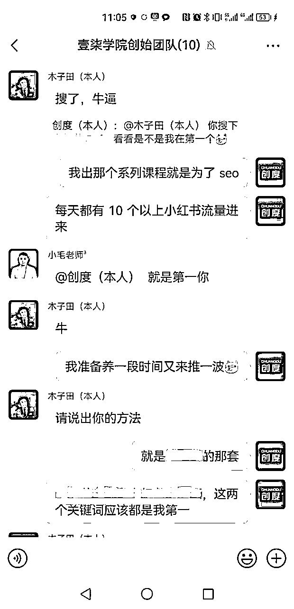
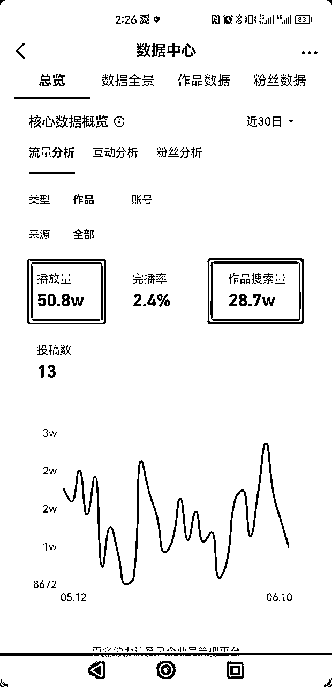
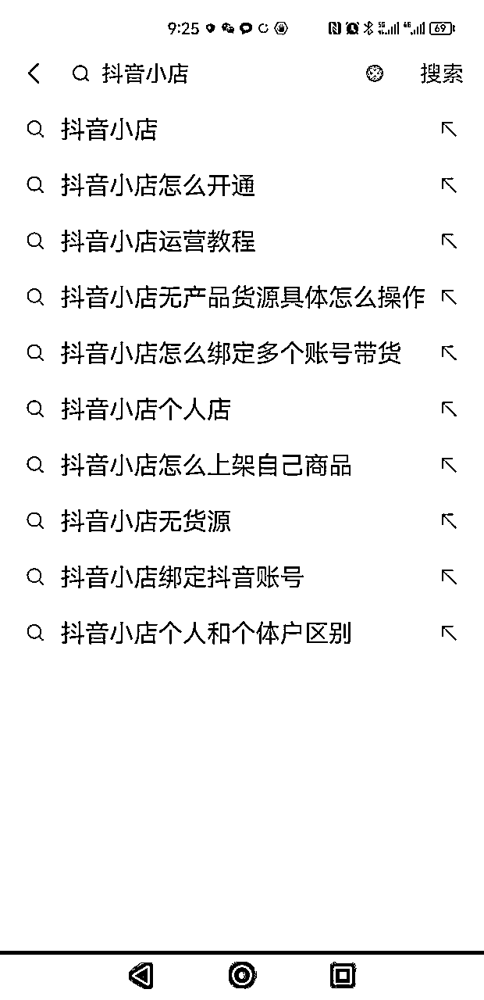
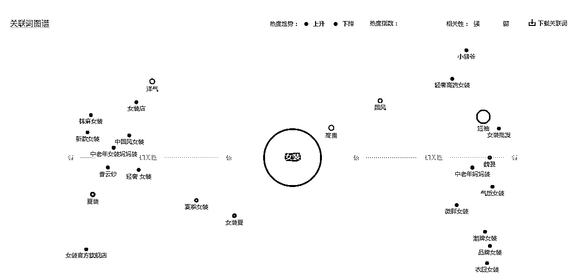
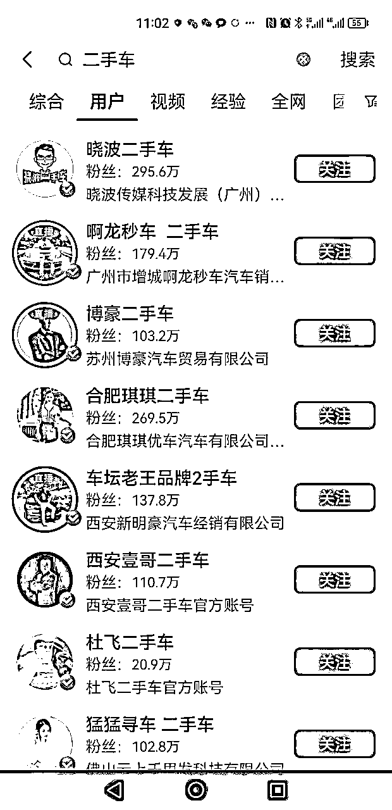
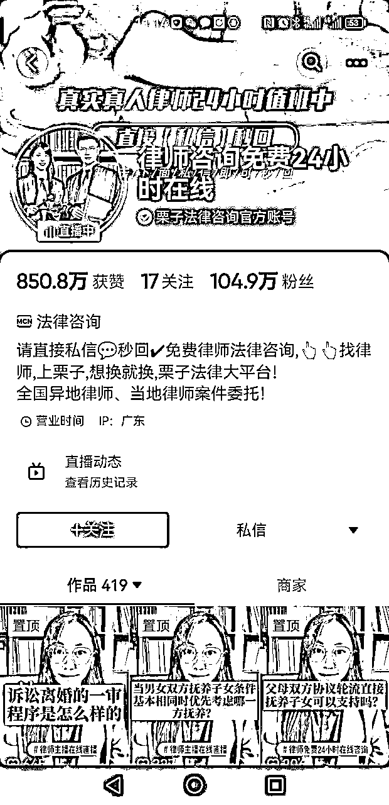
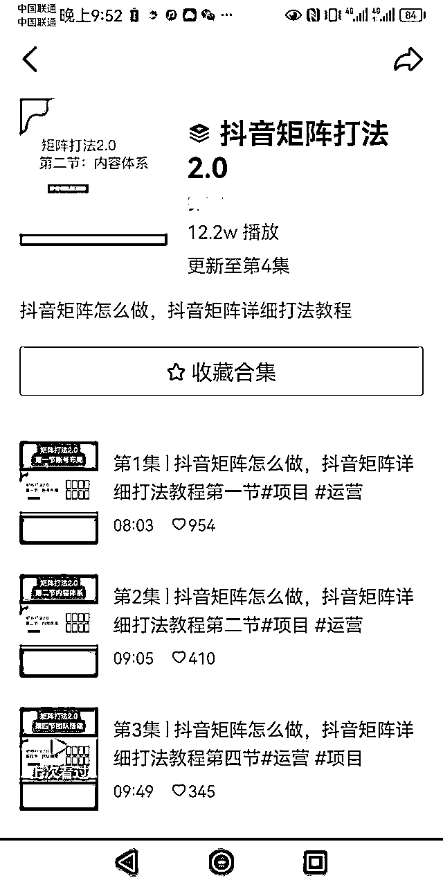
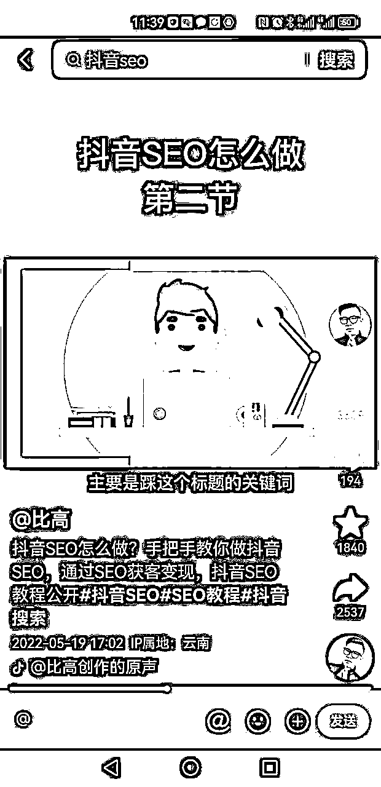
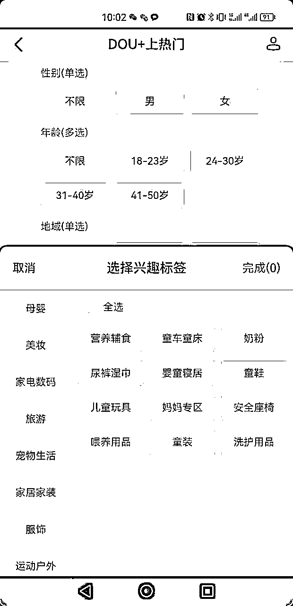
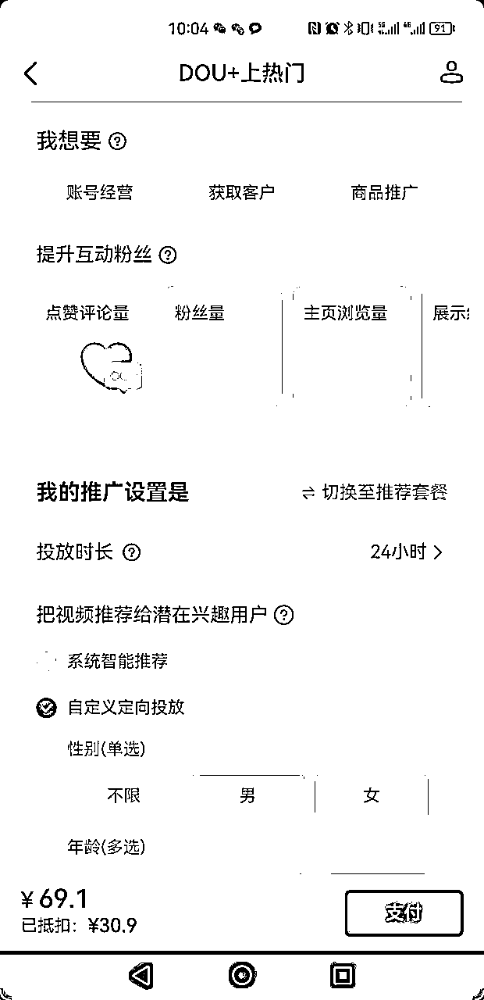

来源：https://ye9o9qy406.feishu.cn/docx/CgDFdeYEpoAAWFxjhC0cjtcOnLf
各位伙伴好，我是创度，上个月刚刚加入生财的萌新，90后创业者，目前是一名项目拆解赛道的知识博主。之前一直在默默潜水，疯狂汲取前辈们分享的心得，着实让我受益匪浅，所以今天我也来尝试做一次分享。
其实产生这次分享的想法比较偶然，是前几天我跟几个圈里的伙伴聊天，无意中提到我最近在抖音布的几个关键词，排上第一了（还算时下比较火的关键词）。结果他们都很感兴趣，纷纷跑来问我怎么做的，让我分享分享。我才意识到，原来这么多人对抖音SEO感兴趣。

我并不是什么资深的SEO玩家，甚至这也是我第一次真正在抖音去布局SEO，因为之前看过一位大佬分享的抖音SEO教程，于是我按照他的方法，一步一步摸索。让我惊喜的是，第一次布词，就排在了第一位。（由于其他原因，账号不方便展示，给大家看看数据吧）。

这几个作品，加起来50W的播放量，其中有28W都是通过搜索过来的，比例甚至超过了50%，这就是SEO的威力。大家要明白，搜索流量是很精准的，这种流量导流过来变现价值也是很高的。
所以今天，我把我的方法分享出来，希望对大家有所帮助。
其实抖音SEO的操作并不难，重要的是要用对方法。接下来我会从选词布词，排名逻辑，如何优化排名，维持排名以及引流这5个方面给大家介绍。
大家一定要记住，在抖音布词，一定要选择热门词。虽然说抖音的流量很庞大，但是他的核心还是推荐流量，搜索流量相对会少很多。
这种情况我们如果再去布一些冷门的词，其实没什么太大的意义。（这点很重要，很多人花了时间精力去布词，排名好不容易做上了，但依然获取不了什么流量，原因就在这）
在抖音搜索框输入关键词，就会出现很多下拉词，这些词就是用户经常搜索的热门词。

根据你所在的行业，思考一下，如果你是客户，一般会搜索什么词。
比如我是做抖音电商的，我的客户一般会搜：抖音小店教程，抖音小店培训，抖音小店怎么开通等等，那这些词我们都能去布。
你是什么行业，就直接布这个行业的类别词。
比如律师，就直接布法律咨询。比如牙医，那就布XX城市牙医诊所。
但是如果你的行业非常细分，那就需要把类别上升到一个大类，大类才能获得更多的流量。
打个比方：假如你是做爵士舞培训的，这个类目就非常小众，这种词布出来，肯定也没多少搜索流量。
这个时候我们就可以把它上升到一个大类——舞蹈培训。搜索舞蹈培训的人肯定不少，我们要学会从大类再锁定到我们的细分类，这样才能吃到更多的搜索流量。
利用巨量指数或者百度指数，来帮我们进行选词。这里我以巨量指数为例。
我们搜索巨量算数，进入网页后找到算数指数。然后直接搜索我们行业的关键词，点击关联分析，就会出现相关的热门词。

然后用表格统计好选出来的热门词，到抖音分别搜索一下这些词，看看搜索出来视频的数量，质量等等。然后综合判断哪些词最适合我们来布，选出其中1-2个关键词全力去铺。
这里提醒一点：很多人可能会想，要把所有选出来的关键词全给他铺上。我认为完全没有必要，这样反而可能会一个词都没布上去。全力铺1-2个词，只要能做上前排，搜索来的流量也够你吃了。
很多人可能不懂排名的逻辑，哪些因素会影响排名呢？
蓝V是有优先级的，而且权重很高。我们搜某一个行业，排名靠前的大部分都是蓝V账号。或者搜名字，有同名的账号，开了蓝V的更靠前。

有些人为了做SEO，直接把昵称都改了，昵称直接踩关键词。例如这位律师，直接改名为律师咨询免费24小时在线。

这样确实能增加搜索权重，但是我发现，增加的权重仅限在用户栏这个列表里，综合或者视频栏的排名没有太大的影响。所以昵称这个不必强求，根据自身情况来决定。为了踩词而改名，反而可能会弄巧成拙。
要学会利用合集，合集名称一定要踩词，这是抖音SEO的核心。
合集在SEO的权重是比较高的，因为合集的数据会叠加。例如播放量，点赞量，评论，转发等等，他是根据总数据来给权重的。
所以大家有同类型的内容一定要建立合集。

取好一个标题就成功了一半，标题一定要踩上关键词，然后做多重叠加。
看看下面这个案例，这是一个SEO的教学视频。一个标题反复踩了4次SEO这个关键词，哪怕语句都不通顺，但依然是个好的标题。

取完标题#话题的时候，也可以带上关键词。能适当增加权重。
在视频内容中，要不断重复的提及关键词。其中包括文字，音频，还有画面。
像我自己做的视频，从文案的第一句话就开始踩关键词，一直到结束，我都会反复的提及这个词。
抖音是能够识别到我们的内容的。
通过上面的方法，把词布足后，也并不是代表你就一定能够上前排。
还有个很关键的因素，就是视频的数据，数据不好会降低我们的搜索权重。
而且就算让你排上前排，用户搜出来一看，你的视频又没点赞又没评论，那他大概率也不会点击进来。所以我们需要给数据做一些优化。
数据的优先级，我认为是点赞>播放>评论>转发。我们重点优化点赞和播放。
有些人通过刷赞的方式，但是我认为这个风险太高，要是被平台检测到，直接违规限流了，得不偿失。
我们可以通过豆荚去正向推动他，但是豆荚投放也是有方法的，否则就是浪费钱。这里给大家提供几种方法。
我建议大家选择10W-30W粉丝的账号，超过30W，特别是那种上百万的大号，粉丝画像太泛了。可以具体分析他的粉丝占比，粉丝画像看是不是你想要的。
如果你没有对标账号，也可以直接投兴趣标签，选择你行业相近的即可。

投点赞评论，前面说了点赞评论是有优先级的，用来给视频增加权重。
金额不用投太多，有个200-500，增加几百点赞就够用了，主要是增加基础数据。
投放时长24小时以上，让系统匹配更精准的流量给你。

当然，并不是所有视频都需要通过豆荚来推动的，有些账号本身有粉丝，有基础数据，正常发布让他自己跑就行了，大家根据自身情况选择。
排名是会掉的，不是说这个关键词做上去了就一劳永逸了。我们需要长期的维护他。
1.时间周期
新发布的内容肯定比老内容搜索权重高，随着时间的推移，排名会慢慢往下掉。
2.被后来者超越了
别人的视频数据，更新时间，各方面指标比你强，就会排在你前面。
前面说了，合集的数据是有积累性的，我们更新视频新产生的数据也会累计到合集里面。
还有新发布的视频刷新了合集更新时间，搜索的权重也会提升。所以我们要定期产出同类型的视频，放进合集里。
什么是优质数据，就是视频的点赞，评论，完播等，是持续上涨的。
我们可以找人帮我们做数据优化，具体怎么操作呢？
让他先搜索我们这个关键词，先点击进入其他博主的视频浏览，然后再退出来进入我们的视频，最后给视频贡献完播，点赞，评论。
其实就类似于电商的刷单，懂的都懂。
通过投豆荚来维持排名，豆荚怎么投？
投点赞评论，提升数据权重
投放时间越长越好，让数据慢慢跑
金额不用太多，一周100就行了，让视频有持续的流量进来。
本来这一点不属于SEO的范畴，但是想了一下，我觉得还是有必要拿出来讲一讲。
成功的SEO光有搜索不行，更要引流到私域进行转化。
我相信大家布局SEO，都是为了最终的目的：引流转化。
我们要学会分析客户的需求，然后根据他的需求，给出延伸价值。
我们还是以抖音电商为例，比如我做了一个抖音电商入驻开通的教程。我会想，会来搜索开店教程的人，还有什么是他们需要的呢。那店开起之后，是不是还要涉及到选品，商品上架，店铺的运营等等。
我们可以在视频里告诉他，我还准备了一份关于抖音电商的全套教程，加我免费领取。那这样他添加你的概率是不是就大多了。
很多人就是不懂的给出延伸价值，那这样当他看完视频你们的交际就结束了，而当我给出价值，添加到私域之后，我们的关系才刚刚开始。